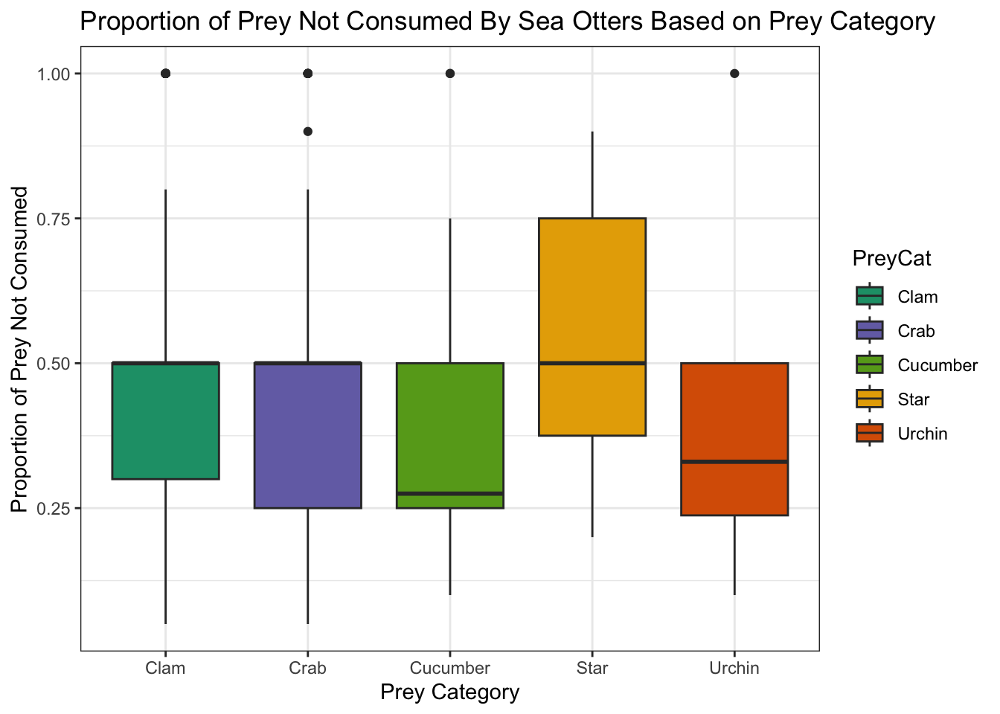

Show code
# Create a DAG using dagitty package... relate to each variable
library(dagitty)
dag <- dagitty("dag {
PreyCat -> DT
DT -> PropNotEat
PreyCat -> PropNotEat
}")
plot(dag) # Visualize DAG
The sea otter (Enhydra lutris) is a highly social marine mammal that plays a vital role as a keystone species in maintaining the health of kelp forest ecosystems by controlling sea urchin populations. Although sea otters are primary predators of sea urchins, their diet is diverse and includes a wide variety of prey types. For example, sea otters in Alaska are known to consume a wide range of prey, including clams, crabs, sea urchins, sea cucumbers, and snails (LaRoche et al., 2023). In recolonized areas of Southeast Alaska, clams are strongly selected despite their relatively low abundance, reflecting their high quality value. Similarly, sea urchins dominate diets primarily in rocky reef habitats where they are more abundant (LaRoche et al., 2023).

The proportion of prey not eaten provides a measure of foraging efficiency and prey handling success, reflecting both biological constraints and behavioral choices during feeding. Because of their important role as a keystone species, understanding their diet and foraging patterns is essential for assessing feeding preferences and food availability in conservation.
This blog post aims to present and discuss the results of a statistical regression analysis conducted on sea otter foraging data collected from visual observations in Prince of Wales, Alaska, by LaRoche et al. (2018). A beta regression using glmmTMB with a zero-adjustment was selected for the analysis in order to assess the proportion of prey not consumed by sea otters during summer 2018. The following question was utilized to guide the analysis:
How does prey categorization and dive depth predict the proportion of prey not eaten?
The mean proportion not eaten was modeled using a Beta regression with a logit link, while a precision parameter (ϕ) captured the variability in proportions around the mean.
\[ \text{PropNotEaten} \sim \text{Beta}(\alpha, \beta) \]
\[ logit(\mu_i) = \beta_{0} + \beta_{diveTime} + \beta_{PreyCat\_urchin} + \beta_{PreyCat\_crab} + \beta_{PreCat\_cucumber} + \beta_{PreCat\_star} \]
Hypothesis 1:
H0: βPreyCat_urchins = 0. Sea otters leave the same proportion of urchins uneaten as they do with clams; prey category does not influence the proportion of prey eaten.
HA: βPreyCat_urchins ≠ 0. Sea otters leave a significantly different proportion of urchins uneaten compared to clams; prey category has a significant effect on the proportion of prey not eaten.
Hypothesis 2:
H0: βdive_time = 0. Dive time has no significant effect on the proportion of prey not eaten; the duration of a dive does not influence how much prey is not eaten.
HA: βdive_time ≠ 0. Dive time does significantly affect the proportion of prey not eaten; longer or shorter dives are associated with a higher or lower proportion of prey left uneaten.
The categorical variable PreyCat represents the general prey categorization of a prey type. In particular, clams and urchins differ biologically in handling difficulty and energetic return. Urchins may require more processing and include defensive structures (spines), whereas clams require shell-breaking but offer concentrated soft tissue. These differences potentially influence the proportion of prey successfully consumed, indicating a direct causal effect of prey category on the proportion of prey not consumed
Additionally, prey category may influence dive duration (continuous numeric variable) because hunting, handling, and extracting different prey may require different levels of effort and time. Thus, prey category potentially influences dive time, which in turn affects the proportion of prey not eaten.
# Create a DAG using dagitty package... relate to each variable
library(dagitty)
dag <- dagitty("dag {
PreyCat -> DT
DT -> PropNotEat
PreyCat -> PropNotEat
}")
plot(dag) # Visualize DAG
The data used in this project were obtained from the KNB Data Repository and are based on the finalized foraging dataset “Sea otter foraging data, visual observations from Prince of Wales, Alaska” compiled by Nicole LaRoche, Sydney King, and Heidi Pearson (2022). LaRoche et al. documented sea otter diets from May to August 2018 using visual observations conducted along the western coast of Prince of Wales Island, Alaska, at sites characterized by high otter densities. The finalized foraging dataset is publicly accessible as a CSV file through the KNB Data Repository.
The foraging dataset used in this project had been previously cleaned by the original authors. However, additional processing was required, including adjusting variables to appropriate ranges and removing missing values. Therefore, further preprocessing steps were necessary before conducting the analyses.
Here, I loaded the necessary packages for the analysis and then imported the dataset by providing the correct file path to read_csv().
library(here)
library(tidyverse)
library(glmmTMB)
library(broom)
library(broom.mixed) # For tidy glmmTMB mixed model
library(kableExtra)set.seed(123) # For reproducibility
forage <- read_csv("forage_final (1)_copy.csv")Missing values (NAs) were removed prior to analysis. I then selected only the variables required for modeling: prey category (PreyCat), dive time (DT), and proportion not eaten (PropNotEat). Additionally, I generated a summary table showing the number of observations within each prey category and verified that all NAs had been removed from the selected variables using colSums() in combination with is.na().
# Select for just prey category and diving time
forage <- forage %>% select(PreyCat, PropNotEat, DT)
forage <- forage %>% drop_na()
table(forage$PreyCat)
Clam Crab Cucumber Star Urchin
205 71 28 7 12 # Check the colSums to ensure all NAs are dropped
colSums(is.na(forage)) PreyCat PropNotEat DT
0 0 0 Visualizing the initial data distribution was also helpful. I opted to use a scatterplot to show the relationship between dive time (a continuous numeric variable) and the proportion of prey not eaten by prey category, along with a boxplot to display the distribution of uneaten prey within each category.
# Create a scatterplot of dive time related to the proportion of prey not eaten based on prey category
forage %>% ggplot(aes(x = DT, y = PropNotEat, col = PreyCat)) +
geom_jitter() +
theme_bw() +
labs(x = "Diving Time (seconds)",
y = "Proportion of Prey Not Eaten",
title = "Proportion of Prey Not Consumed By Sea Otters Based on Diving Time and /nPrey Category") +
theme(plot.title = element_text(size = 11, face = "bold"))
# Create boxplots to visualize the distribution of prey categories and proportion of prey not eaten
forage %>% ggplot(aes(x = PreyCat, y = PropNotEat, fill = PreyCat)) + geom_boxplot() +
labs(
title = "Proportion of Prey Not Consumed By Sea Otters Based on Prey Category",
x = "Prey Category",
y = "Proportion of Prey Not Consumed"
) +
scale_fill_manual(values = c(
"Clam" = "#1b9e77",
"Urchin" = "#d95f02",
"Crab" = "#7570b3",
"Cucumber" = "#66a61e",
"Star" = "#e6ab02"
)) + theme_bw()
From the scatterplot, it appears that sea otters spending roughly 25-100 seconds on prey often leave around 50% or even 100% of clams and crabs uneaten, suggesting potentially wasteful behavior. Most prey left uneaten cluster around 50% for clams, crabs, and sea cucumbers, and between 25-175 seconds for sea urchins. Notably, longer prey handling times, which are associated with deeper dives, are linked to lower proportions of prey left uneaten, typically under 25-50%, especially for clams, urchins, and crabs. The boxplot shows that starfish have a higher median proportion left uneaten than other prey categories, while sea cucumbers have the lowest median. Sea urchins also tend to be left uneaten less often than clams.
Before building a model using real world data, it is important to simulate data to ensure that the model performs as expected. In this case, I generated simulated data to evaluate model performance, assess parameter recovery, and verify that the fitted model behaves appropriately.
According to the betareg CRAN project, a variable cannot take exact values of 0 or 1. Therefore, a zero-adjustment is required to slightly decrease values of 1 to just below 1 and slightly increase values of 0 to just above 0. To adjust the response variable PropNotEat to the corrected range, I applied the zero-adjustment formula from the betareg vignette : \(y_{\text{adj}} = \frac{y \cdot (n - 1) + 0.5}{n}\), where n is the sample size (Smithson and Verkuilen, 2006).
# Beta does not take direct 0 and 1, so do adjustment to offset before 1 and after 0
forage <- forage %>%
mutate(PropNotEat_adj = # Transformation to adjust (betareg cranr)
(PropNotEat * (nrow(.) - 1) + 0.5) / nrow(.))I was particularly interested in whether an interaction existed between dive time and prey category. To determine the most appropriate model, I fitted each candidate model using glmmTMB() with a beta_family() and logit link. I then compared models using Akaike’s Information Criterion (AIC) to identify the lowest score. The model PropNotEat_adj ~ DT + PreyCat had the lowest (most negative) AIC, indicating the best balance between fit and simplicity. Therefore, this model was selected for further analysis.
# Original model
forage_beta <- glmmTMB(
PropNotEat_adj ~ DT + PreyCat,
data = forage,
family = beta_family(link = "logit")
)
# Model with interaction between PreyCat and DT
forage_interaction <- forage_org <- glmmTMB(
PropNotEat_adj ~ PreyCat * DT,
data = forage,
family = beta_family(link = "logit")
)# Compare models (lowest AIC) (Akaike's An Information Criterion for log-link)
AIC(forage_beta, forage_interaction) df AIC
forage_beta 7 -21.95160
forage_interaction 11 -14.69916To assess model performance and parameter recovery, I simulated 15,000 observations based on the original model coefficients. Dive time (DT) was drawn from a uniform distribution, and prey category (PreyCat) was randomly assigned.
# Reset seed (redefined)
set.seed(123)
# Define simulated obs... with law of large numbers, larger sample size should get closer to actual predictors
n_sim <- 15000
# Define coefficients from original model
beta0 <- 0.738077
beta_dive_time <- -0.004949
beta_crab <- -0.265717
beta_cucumber <- -0.449131
beta_star <- -0.240470
beta_urchin <- -0.205423
phi <- 1.72 # Precision
## Simulate range for predictors
dt <- runif(n_sim, 3, 255) # Range of dive time
# Randomly generate PreyCat factors for simulated data... then for each level, sample with replacement to get vector of length n_sim
PreyCat <- sample(c("Clam","Crab","Cucumber","Star","Urchin"), n_sim, replace = TRUE)
## Define linear predictor and logit equation
# Assign coefficient to each PreyCat level
prey_effect <- ifelse(PreyCat == "Crab", beta_crab,
ifelse(PreyCat == "Cucumber", beta_cucumber,
ifelse(PreyCat == "Star", beta_star,
ifelse(PreyCat == "Urchin", beta_urchin,
0)))) # Else assign clam (reference)A linear predictor combining dive time and prey effects was calculated on the logit scale and transformed to the response scale. Each observation was then reparameterized into alpha and beta parameters (derived from the betareg CRAN project) for the beta distribution using the mean and precision. PropNotEat_adj values were simulated accordingly using rbeta().
glm_eq <- beta0 + beta_dive_time * dt + prey_effect # Recall that prey_effect has the associated beta coefficient for each level
# Convert linear predictor (logit scale) to mean proportion on response scale
mean_sim <- exp(glm_eq) / (1 + exp(glm_eq))
# Reparameterize beta distribution parameters (derived from CRAN at (https://search.r-project.org/CRAN/refmans/betareg/html/dbetar.html)
alpha <- mean_sim * phi
beta <- (1 - mean_sim) * phi
# Simulate response variable from beta distribution using calculated alpha and beta
PropNotEat_adj <- rbeta(n_sim, alpha, beta)The resulting dataset was fitted with glmmTMB() using a beta family and logit link to verify that the model could recover the original relationships.
# Create simulated data frame
simulated_forage <- data.frame(
PropNotEat_adj = PropNotEat_adj,
DT = dt,
PreyCat = factor(PreyCat, levels = c("Clam","Crab","Cucumber","Star","Urchin"))
)
# Fit simulated model
sim_model <- glmmTMB(
PropNotEat_adj ~ DT + PreyCat,
data = simulated_forage,
family = beta_family(link = "logit")
)# Compare coefficients
# Create tidy table with broom package
sim_tidy <- tidy(sim_model) %>%
mutate(model = "Simulated") # Add column to identify model
# Create tidy table for original model coefficients
original_tidy <- tidy(forage_beta) %>%
mutate(model = "Original") # Add column to identify model
# Combine into table for comparison
coef_comparison <- bind_rows(sim_tidy, original_tidy)
# View table
coef_comparison %>%
select(term, estimate, std.error, model) %>%
kable() %>%
kable_styling()| term | estimate | std.error | model |
|---|---|---|---|
| (Intercept) | 0.7406679 | 0.0270753 | Simulated |
| DT | -0.0050162 | 0.0001319 | Simulated |
| PreyCatCrab | -0.2196297 | 0.0297231 | Simulated |
| PreyCatCucumber | -0.4368883 | 0.0297059 | Simulated |
| PreyCatStar | -0.2597803 | 0.0297271 | Simulated |
| PreyCatUrchin | -0.2300222 | 0.0296505 | Simulated |
| (Intercept) | 0.7519842 | 0.1663546 | Original |
| DT | -0.0050369 | 0.0014648 | Original |
| PreyCatCrab | -0.2044587 | 0.1603907 | Original |
| PreyCatCucumber | -0.4937948 | 0.2334250 | Original |
| PreyCatStar | -0.2481334 | 0.4475516 | Original |
| PreyCatUrchin | -0.2071764 | 0.3396317 | Original |
Here, it is observable that the coefficients for each predictor in the simulated model closely match those from the original model fitted to the real data. This indicates that the beta regression is able to reliably recover the underlying parameter relationships.
Beta regression was specifically chosen for this analysis because the response variable, PropNotEat_adj, is proportional. Recall the definition of the beta distribution used in the model:
\[ \text{PropNotEaten} \sim \text{Beta}(\alpha, \beta) \]\[ logit(\mu_i) = \beta_{0} + \beta_{diveTime} + \beta_{PreyCat\_urchin} + \beta_{PreyCat\_crab} + \beta_{PreyCat\_cucumber} + \beta_{PreyCat\_star} \]
The beta regression results were used to test whether prey category and dive time influence the proportion of prey left uneaten. Here, I interpreted the model results to assess whether each hypothesis is supported.
# Create cleaned summary output table
tidy(forage_beta) %>%
mutate(
estimate = round(estimate, 2),
std.error = round(std.error, 2),
statistic = round(statistic, 2),
p.value = round(p.value, 3)
) %>%
select(term, estimate, std.error, statistic, p.value) %>%
kable() %>%
kable_styling(bootstrap_options = c("striped", "hover"), full_width = FALSE)| term | estimate | std.error | statistic | p.value |
|---|---|---|---|---|
| (Intercept) | 0.75 | 0.17 | 4.52 | 0.000 |
| DT | -0.01 | 0.00 | -3.44 | 0.001 |
| PreyCatCrab | -0.20 | 0.16 | -1.27 | 0.202 |
| PreyCatCucumber | -0.49 | 0.23 | -2.12 | 0.034 |
| PreyCatStar | -0.25 | 0.45 | -0.55 | 0.579 |
| PreyCatUrchin | -0.21 | 0.34 | -0.61 | 0.542 |
H0: βPreyCat_urchins = 0.
HA: βPreyCat_urchins ≠ 0.
Based on the model, the coefficient for urchins compared to clams was not significant, indicating that sea otters do not leave a significantly different proportion of urchins uneaten (β = -0.21, p = 0.54). Thus, we fail to reject the null hypothesis that sea otters leave the same proportion of urchins uneaten as they do with clams; prey category does not appear to affect the proportion of prey left uneaten for urchins.
H0: βdive_time = 0.
HA: βdive_time ≠ 0.
Based on the model, dive time had a significant negative effect on the proportion of prey not eaten, indicating that longer dives are associated with a slightly lower proportion of prey left uneaten (β = -0.005, p = 0.0006). As a result, we can reject the null hypothesis that the duration of a dive has no significant effect on the prey not consumed; there is sufficient statistical evidence to suggest that dive duration significantly influences the proportion of prey not consumed.
Confidence intervals are essential for interpreting model estimates because they can be used to quantify uncertainty and interpret effect size. Confidence intervals can be calculated for individual model coefficients, indicating the range in which the true beta value is expected to fall approximately 95% of the time. Alternatively, confidence intervals can be constructed for predicted values of the response variable, showing the range in which the mean response is expected to fall about 95% of the time.
I derived confidence intervals from the fitted model forage_beta using confint(). Note that these intervals are on the link scale, so they are not directly interpretable as proportions without transforming from the logit scale.
# Recall that still in link space
ci_forage <- confint(forage_beta)
# Style with kableExtra
round(ci_forage,2) %>%
kable() %>%
kable_styling(bootstrap_options = c("striped", "hover"), full_width = FALSE)| 2.5 % | 97.5 % | Estimate | |
|---|---|---|---|
| (Intercept) | 0.43 | 1.08 | 0.75 |
| DT | -0.01 | 0.00 | -0.01 |
| PreyCatCrab | -0.52 | 0.11 | -0.20 |
| PreyCatCucumber | -0.95 | -0.04 | -0.49 |
| PreyCatStar | -1.13 | 0.63 | -0.25 |
| PreyCatUrchin | -0.87 | 0.46 | -0.21 |
The confidence interval for dive time is negative, indicating that longer dives are potentially associated with a slightly lower proportion of prey left uneaten. The confidence interval for PreyCatCucumber is negative and does not include zero, indicating that sea cucumbers are left uneaten significantly less often than clams (reference prey category).
The confidence intervals for PreyCatCrab, PreyCatStar, and PreyCatUrchin all include zero, indicating that the proportion of these prey categories left uneaten are not significant different from clams. Overall, the confidence intervals of each predictor align with the p values from the beta regression model output; significant effects are reflected by the intervals that do not include zero, while the nonsignificant effects have intervals than include zero.
The uncertainty in the proportion of urchins and clams left uneaten was of interest and can be visualized using a ribbon graph among predicted lines from the model.
I created a prediction grid to explore how dive time (DT) and prey category (PreyCat) influence the proportion of prey left uneaten by sea otters (PropNotEat_adj). I generated a sequence of 100 evenly time-spaced dive times, then combined these with all levels of PreyCat. I then ensured that the PreyCat factor levels in the prediction grid matched those in the original dataset.
# Build prediction grid of all combinations of DT and PreyCat
predicted_data <- expand.grid(
# Establish sequence for predictor range (DT)
DT = seq(min(forage$DT, na.rm = TRUE), max(forage$DT, na.rm = TRUE), length.out = 100),
PreyCat = levels(factor(forage$PreyCat)) # Convert to factor
)
# Ensure levels in predicted_data exactly match in forage$PreyCat
predicted_data$PreyCat <- factor(predicted_data$PreyCat, levels = levels(factor(forage$PreyCat)))I utilized forage_beta to generate predictions on the logit link scale for each combination of dive time and prey category in the prediction grid. I also calculated the standard errors of these predictions. I then used the predicted values and their standard errors to compute 95% confidence intervals on the link scale by adding and subtracting 1.96 times the standard error from the predicted values to obtain the lower and upper bounds.
# Predict on logit link scale with standard errors
pred_link <- predict(
forage_beta,
newdata = predicted_data,
type = "link",
se.fit = TRUE
)
# Predict on logit link scale with standard errors
predicted_data$fit <- pred_link$fit
predicted_data$se.fit <- pred_link$se.fit
# Calculate CIs on link scale for lower and upper bounds
predicted_data$lower_link <- predicted_data$fit - 1.96 * predicted_data$se.fit
predicted_data$upper_link <- predicted_data$fit + 1.96 * predicted_data$se.fitIt was necessary to revert the predicted values and confidence intervals from the logit link scale back to the response scale, so I created an inverse logit function to perform this transformation. I then calculated the predicted proportions as well as the lower and upper bounds of the 95% confidence intervals using the inverse logit function inv_logit. Finally, I filtered the prediction grid to focus only on the prey categories of interest, clams and urchins, for data visualization.
# Revert to response scale usinng inverse logit
inv_logit <- function(x) 1 / (1 + exp(-x))
# Run inverse function on lower and upper bounds, as well as predicted adjusted prop uneaten
predicted_data$predicted_PropNotEat_adj <- inv_logit(predicted_data$fit)
predicted_data$lower <- inv_logit(predicted_data$lower_link)
predicted_data$upper <- inv_logit(predicted_data$upper_link)
# Select only categories to plot
predicted_ribbon <- predicted_data %>%
filter(PreyCat %in% c("Clam", "Urchin"))# Plot fitted lines per prey category
predicted_data %>%
ggplot(aes(x = DT, y = predicted_PropNotEat_adj, color = PreyCat)) +
geom_line(size = 1) +
labs(
title = "Effect of Dive Time on Predicted Proportion Not Eaten Based on Prey Category",
x = "Dive Time (seconds)",
y = "Predicted Proportion Not Eaten"
) +
theme_minimal() +
scale_color_brewer(palette = "Set1")
# Plot fitted lines per prey category (faceted view)
predicted_data %>%
ggplot(aes(x = DT, y = predicted_PropNotEat_adj, color = PreyCat)) +
geom_line(size = 1) +
labs(
title = "Effect of Dive Time on Predicted Proportion Not Eaten Based on Prey Category",
x = "Dive Time (seconds)",
y = "Predicted Proportion Not Eaten"
) + facet_wrap(~ PreyCat) +
theme_minimal() +
scale_color_brewer(palette = "Set1")
With a faceted view, it is observable that as dive time increases, the proportion of prey left uneaten generally decreases for all prey types. Clams consistently have the highest predicted proportion left uneaten across dive times, while sea cucumbers show the lowest. Starfish and urchins also have similar predicted proportions, being slightly lower than clams but higher than sea cucumbers.
## Ribbon
predicted_data %>% filter(PreyCat %in% c("Clam", "Urchin")) %>%
ggplot(aes(x = DT, y = predicted_PropNotEat_adj, color = PreyCat)) +
# Ribbon for Clam and Urchin
geom_ribbon(
data = predicted_ribbon,
aes(ymin = lower, ymax = upper, fill = PreyCat),
alpha = 0.2,
color = NA
) +
# Predicted lines for all categories
geom_line(size = 1) +
labs(
title = "Effect of Dive Time on Predicted Proportion Not Eaten by Prey Category",
x = "Dive Time (seconds)",
y = "Predicted Proportion Not Eaten"
) +
theme_minimal() +
scale_color_brewer(palette = "Set1") +
scale_fill_brewer(palette = "Set1")
The predicted proportion of prey left uneaten for clams and urchins across dive times is visualized above, including 95% confidence intervals for predicted outcomes. As dive time increases, the proportion of prey left uneaten decreases for both prey types. Clams have a higher predicted proportion left uneaten than urchins across the range of five times. Additionally the ribbons illustrate the uncertainty around these predictions, with urchins indicating a wider confidence interval and potentially more variability in predicted values compared to clams.
At approximately the halfway point of 125 seconds of diving, it can be stated with 95% confidence that sea otters leave about 57% of a clam uneaten on average, compared to 49% of an urchin. This suggests that sea otters may expend more energy processing sea urchins than clams, and as a result, they may leave less uneaten when spending more time diving.
The purpose of this analysis was to demonstrate how a statistical model, specifically beta regression, can be used to perform meaningful analyses, including hypothesis testing and interpreting confidence intervals. The analysis indicates that sea otters tend to leave more of their prey uneaten as dive time increases, reflecting the statistically significant effect of dive duration on the proportion of prey not consumed. Prey category does not appear to influence the proportion of urchins left uneaten. However, sea otters are generally more wasteful with sea cucumbers than with clams, suggesting that clams are a highly valued prey item. Interestingly, sea otters leave a higher proportion of clams uneaten than urchins as dive time increases. For example, at around 125 seconds of diving, it is estimated with 95% confidence that about 57% of a clam remains uneaten on average, compared to 49% of an urchin.
For future analysis, the age (adult and juvenile) of observed sea otters may be considered as a potential confounding variable impacting diving time, preference for prey, and the proportion of prey left uneaten. Including age could be beneficial to clarify whether observed patterns in prey consumption are consistent across different life stages of if younger and older otters exhibit distinct foraging behaviors. Moreover, experience and physical capability could be accounted for in terms of impacts on feeding efficiency.
Cribari-Neto, F. (n.d.). Beta regression in R. Retrieved December 11, 2025, from https://cran.r-project.org/web/packages/betareg/vignettes/betareg.html
LaRoche, N., King, S., & Pearson, H. (2020). Sea otter foraging data, visual observations from Prince of Wales, Alaska. [Dataset]. Knowledge Network for Biocomplexity. Retrieved October 5, 2025, from
https://knb.ecoinformatics.org/view/doi%3A10.5063%2FF1C53J8X
LaRoche, N., King, S., Fergusson, E., Eckert, G., & Pearson, H. (2023). Sea otter diet nutrient composition with respect to recolonization, life history, and season in southern Southeast Alaska. Wiley. https://doi.org/10.22541/au.167222186.60136269/v1
R: The beta distribution in regression parameterization. (n.d.). Retrieved December 11, 2025, from https://search.r-project.org/CRAN/refmans/betareg/html/dbetar.html?utm_source
Smithson, M., & Verkuilen, J. (2006). A better lemon squeezer? Maximum-likelihood regression with beta-distributed dependent variables. Psychological Methods, 11(1), 54–71. https://doi.org/10.1037/1082-989x.11.1.54